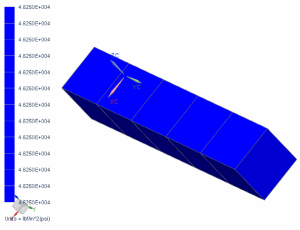

Display the axial stress after loading
Display the axial stress at the end of the loading subcase.
 Simulation Navigator
Simulation Navigator
-
 Results
Results
 Post-Processing Navigator
Post-Processing Navigator
-

 Applying Loads (expand)
Applying Loads (expand)
-
Stress - Element Nodal (expand)
-
YY

The axial stress is constant throughout the bar and equal to the applied pressure.